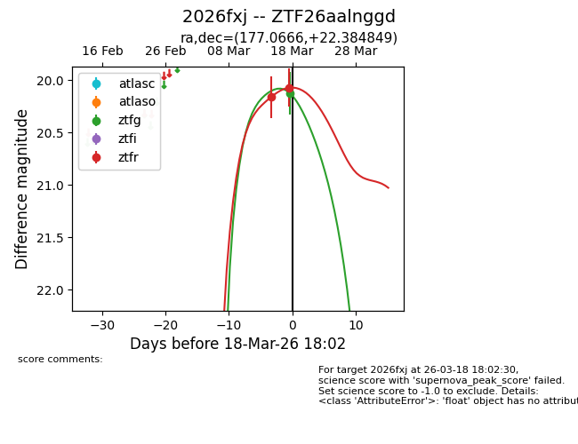
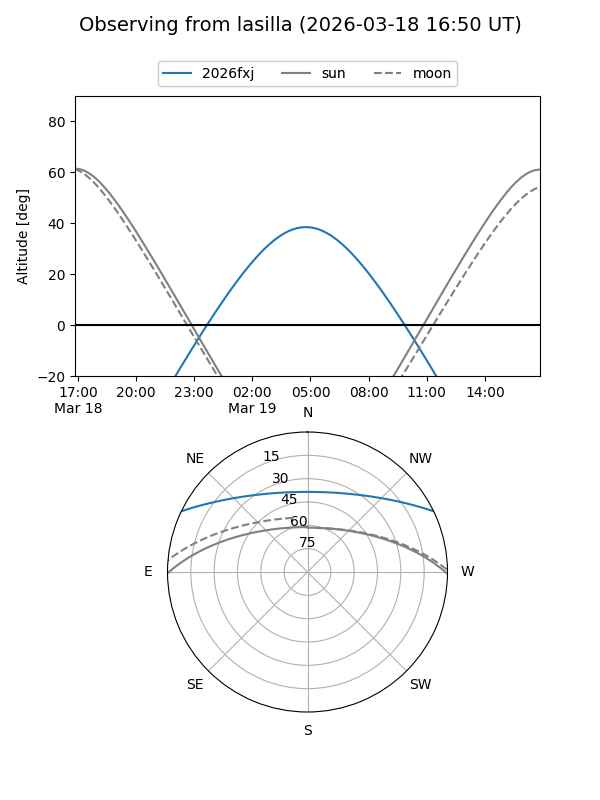
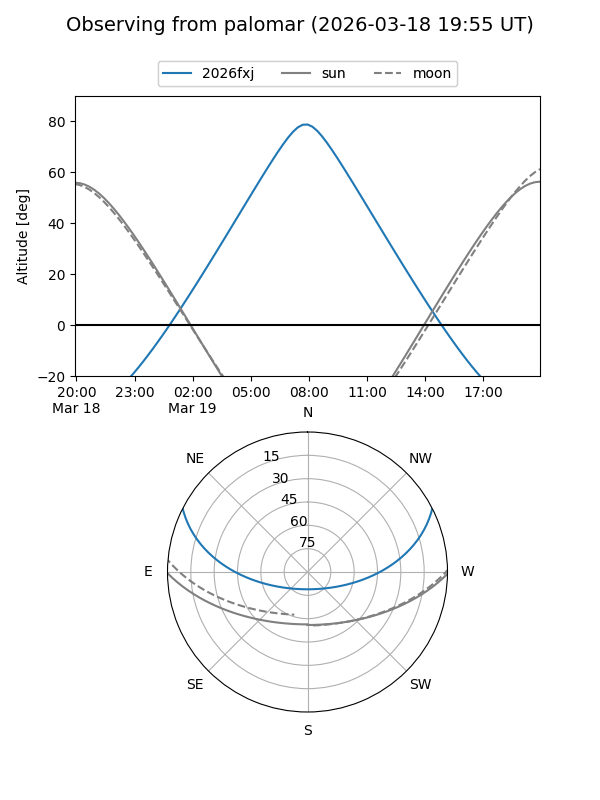
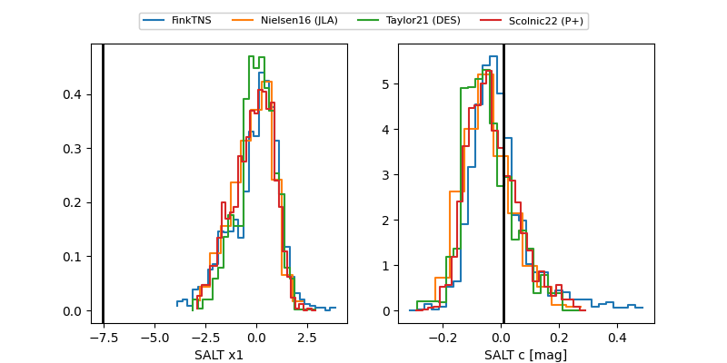

2026fxj
Target 2026fxj at 2026-03-18 18:04
Aliases and brokers:
FINK: link
Lasair: link
ALeRCE: link
TNS: link
YSE: link
alt names
ZTF26aalnggd (ztf,fink_ztf)
2026fxj (tns,yse)
Coordinates:
equatorial (ra, dec) = 177.0666,+22.38485
equatorial (HMS+DMS) = 11:48:16.00,+22:23:05.46
galactic (l, b) = (227.7934,+74.90851)
Flags:
Photometry:
last ztfg=20.12, ztfr=20.07
1 ztfg, 2 ztfr detections
Lightcurve

Visibility


Additional plots
